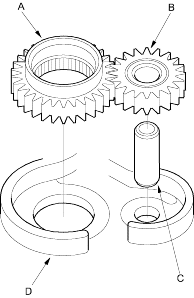
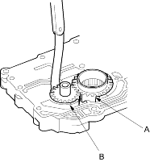
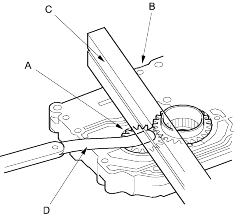

- Install the ATF pump drive gear (A), driven gear (B) and ATF pump driven gear shaft (C) in the main valve body (D). Lubricate all parts with ATF and install the ATF pump driven gear with its grooved and chamfered side facing up.

- Measure the side clearance of the ATF pump drive gear (A) and driven gear (B).
ATF Pump Gears Side (Radial) Clearance:
Standard (New):
ATF Pump Drive Gear
0.105-0.1325 mm (0.004-0.005 in.)
ATF Pump Driven Gear
0.035-0.0625 mm (0.0014-0.0025 in.)

- Remove the ATF pump driven gear shaft. Measure the thrust clearance between the ATF pump driven gear (A) and the valve body (B) with a straight edge (C) and a feeler gauge (D).
ATF Pump Drive/Driven Gear Thrust (Axial)
Clearance:
Standard (New):
0.03-0.06 mm (0.001-0.002 in.)
Service Limit:
0.07 mm (0.003 in.)
